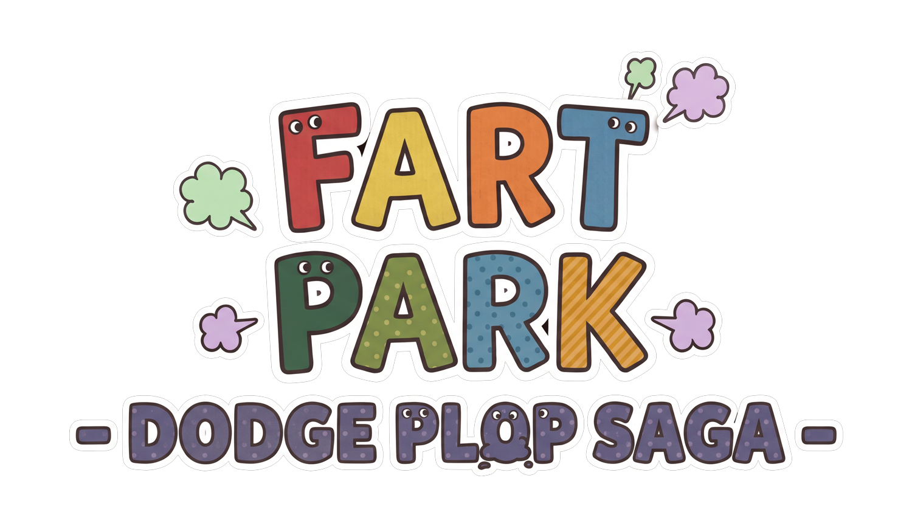

⚙️
Papper & skugga
Spelets zoom
1
Spelarens storlek
0.55
Spelarens kant
10
Objektens kant
4.5
Skuggtäthet (hård)
0.5
Skugg-offset X
-3
Skugg-offset Y
0
Mjuk skuggtäthet
0.06
Mjuk offset X
0.5
Mjuk offset Y
3.5
📋 Kopiera inställningar
↺ Återställ
⭐
0
🎈
0/3
🧲
0/3
🏁
0%
🏰
Sagolandskap
🐢
🔊
🏠
🏰 Sagolandskap!
🏁 🍭
🧲 +1 → 🦄
?
?
?
🍭
🍫
🧁
🍦

🏰
🌳
🏙️
🎪
🎡
🍭
🌙
🏯
🏜️
🦄
✂️